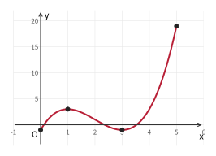
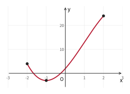
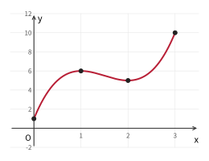

ホーム ＞ 数学II ＞ 微分法（接線・増減・極値）
別冊練習問題 5 の解答 閉区間での最大・最小
(1) 関数 \(f(x)=x^{3} - 6 x^{2} + 9 x - 1\ (0\leqq x\leqq 5)\) の最大値と最小値、およびそのときの \(x\) の値を求めよ。
導関数と極値の候補
\[f'(x)=3 x^{2} - 12 x + 9=3 \left(x - 3\right) \left(x - 1\right)\]\(f'(x)=0\ \Rightarrow\ x=1,\ 3\)。このうち \(0\leqq x\leqq 5\) に入るのは \(x=1,\ 3\)。
増減表をかく（両端も入れる）
| \(x\) | \(0\) | \(1\) | \(3\) | \(5\) | |||
|---|---|---|---|---|---|---|---|
| \(f'(x)\) | \(+\) | \(0\) | \(-\) | \(0\) | \(+\) | ||
| \(f(x)\) | \(-1\) | \(\nearrow\) | \(3\) 極大 | \(\searrow\) | \(-1\) 極小 | \(\nearrow\) | \(19\) |
最大値・最小値
極値の候補と両端の値を比べる。
\[f(0)=-1,\ f(1)=3,\ f(3)=-1,\ f(5)=19\]最大値 \(19\)（\(x=5\)）、最小値 \(-1\)（\(x=0,\ 3\)）。

【答案】
\[\text{最大値 }19\ (x=5),\quad \text{最小値 }-1\ (x=0,\ 3)\]答
(2) 関数 \(f(x)=- x^{3} + 3 x^{2} + 9 x + 2\ (-2\leqq x\leqq 2)\) の最大値と最小値、およびそのときの \(x\) の値を求めよ。
導関数と極値の候補
\[f'(x)=- 3 x^{2} + 6 x + 9=- 3 \left(x - 3\right) \left(x + 1\right)\]\(f'(x)=0\ \Rightarrow\ x=-1,\ 3\)。このうち \(-2\leqq x\leqq 2\) に入るのは \(x=-1\)。
増減表をかく（両端も入れる）
| \(x\) | \(-2\) | \(-1\) | \(2\) | ||
|---|---|---|---|---|---|
| \(f'(x)\) | \(-\) | \(0\) | \(+\) | ||
| \(f(x)\) | \(4\) | \(\searrow\) | \(-3\) 極小 | \(\nearrow\) | \(24\) |
最大値・最小値
極値の候補と両端の値を比べる。
\[f(-2)=4,\ f(-1)=-3,\ f(2)=24\]最大値 \(24\)（\(x=2\)）、最小値 \(-3\)（\(x=-1\)）。

【答案】
\[\text{最大値 }24\ (x=2),\quad \text{最小値 }-3\ (x=-1)\]答
(3) 関数 \(f(x)=2 x^{3} - 9 x^{2} + 12 x + 1\ (0\leqq x\leqq 3)\) の最大値と最小値、およびそのときの \(x\) の値を求めよ。
導関数と極値の候補
\[f'(x)=6 x^{2} - 18 x + 12=6 \left(x - 2\right) \left(x - 1\right)\]\(f'(x)=0\ \Rightarrow\ x=1,\ 2\)。このうち \(0\leqq x\leqq 3\) に入るのは \(x=1,\ 2\)。
増減表をかく（両端も入れる）
| \(x\) | \(0\) | \(1\) | \(2\) | \(3\) | |||
|---|---|---|---|---|---|---|---|
| \(f'(x)\) | \(+\) | \(0\) | \(-\) | \(0\) | \(+\) | ||
| \(f(x)\) | \(1\) | \(\nearrow\) | \(6\) 極大 | \(\searrow\) | \(5\) 極小 | \(\nearrow\) | \(10\) |
最大値・最小値
極値の候補と両端の値を比べる。
\[f(0)=1,\ f(1)=6,\ f(2)=5,\ f(3)=10\]最大値 \(10\)（\(x=3\)）、最小値 \(1\)（\(x=0\)）。

【答案】
\[\text{最大値 }10\ (x=3),\quad \text{最小値 }1\ (x=0)\]答